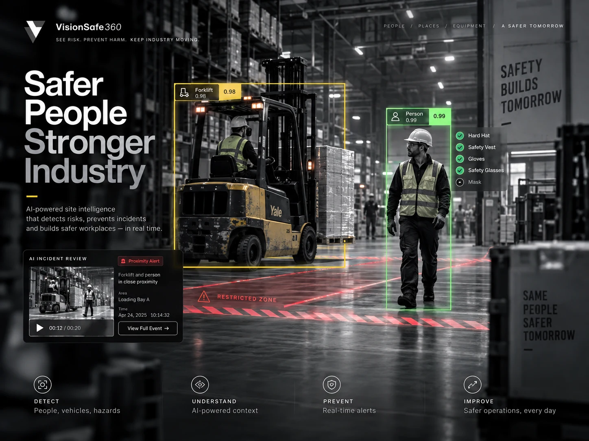
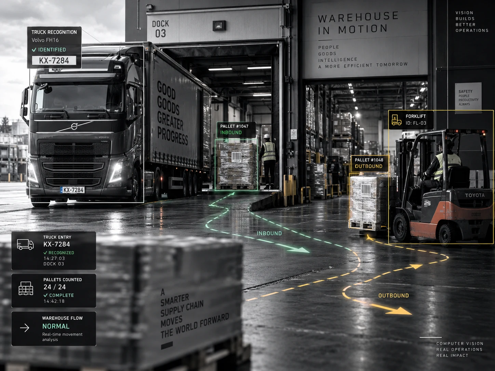
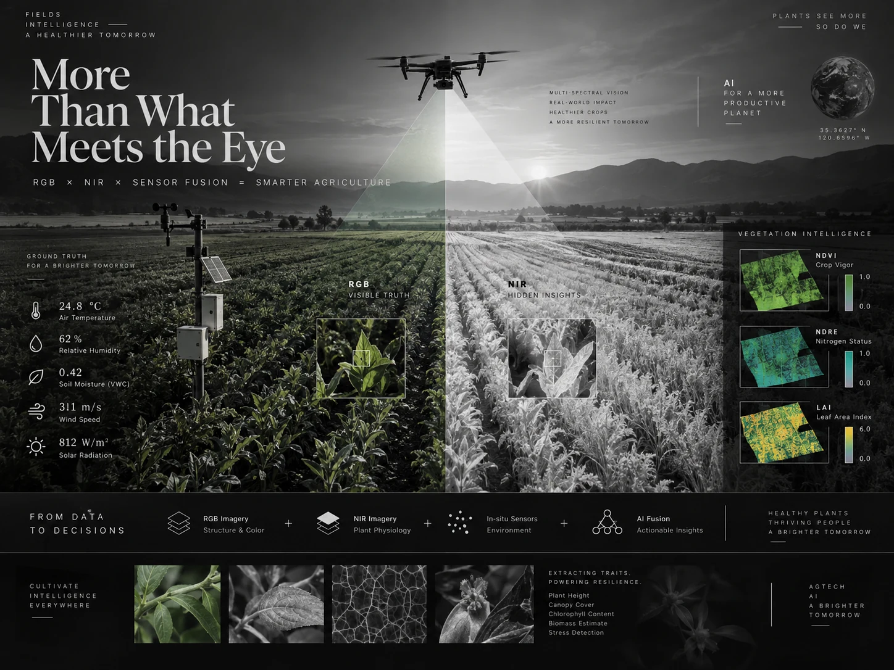
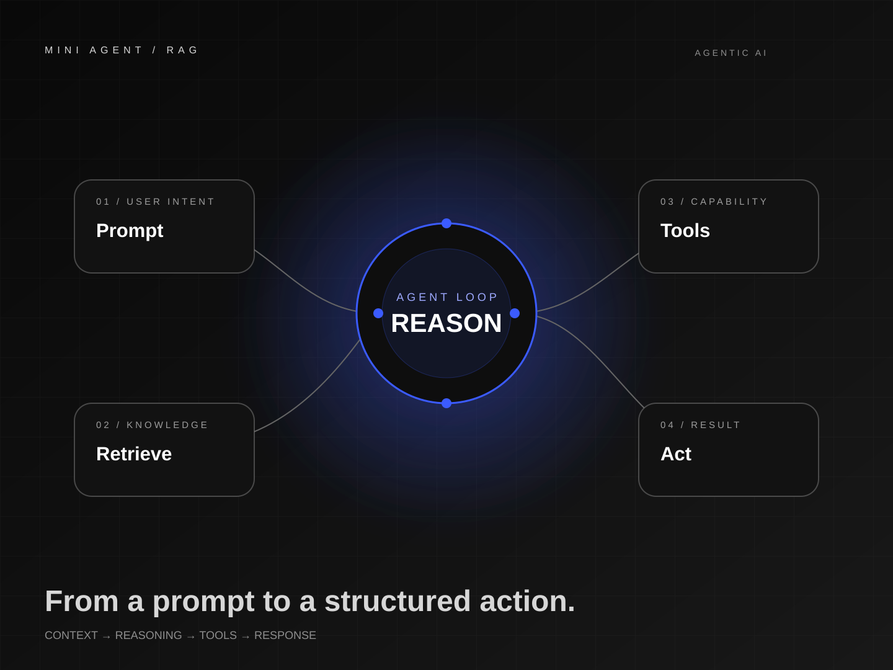

01VISION & DECISION
Working MVP · Pre-pilot↗
VISION & DECISION
A working pre-pilot industrial computer-vision platform for PPE, falls, forklift-person proximity and restricted-zone events, built around a human-in-the-loop workflow.
From model training and evaluation to FastAPI services, real-time computer vision, data pipelines and production-minded product systems.
I like projects where models have to survive contact with APIs, data, users, latency, testing and real operational constraints.

A working pre-pilot industrial computer-vision platform for PPE, falls, forklift-person proximity and restricted-zone events, built around a human-in-the-loop workflow.

An implementation program for vehicle entry, license-plate reading, pallet counting and warehouse movement tracking across a camera-rich factory environment.

A document-understanding pipeline that fine-tunes Donut to produce structured fields directly from pixels, with training, batch inference and an API layer.

A tested engineering MVP for image quality checks, vegetation traits, NDVI statistics and weather/soil feature fusion, delivered by CLI and FastAPI.
A product recommendation system using TF-IDF, cosine similarity and Nearest Neighbors, evaluated with ranking metrics rather than only anecdotal examples.

Enterprise ERP engineering work spanning backend contracts, auditability, idempotency, data integrity, reporting semantics, operational recovery and release gates.

A small public codebase used to practice the core engineering loop behind AI-agent systems: environment setup, FastAPI routing and minimal RAG/agent structure.
I’m an Artificial Intelligence graduate and AI Engineer focused on computer vision, applied ML and production-ready AI services. I build across the lifecycle: data, training, evaluation, APIs, backend integration, testing and deployment.
VISION & DECISION (V&D) — edge-first industrial safety intelligence using existing CCTV.
Egyptian Russian University (ERU), July 2026.
Real-time perception, document AI, recommendation, multimodal pipelines and agentic workflows.
I prefer explicit limits, reproducible tests and honest evaluation over inflated demo metrics.
A broad stack, organized around the job the system needs to do.
PyTorch · YOLO · OpenCV · ByteTrack · object detection · pose logic · tracking · zones · video analytics
Scikit-learn · Pandas · NumPy · EDA · feature engineering · recommendation systems · model evaluation
Hugging Face · Donut · NLP · TF-IDF · spaCy · prompt engineering · RAG · agent foundations
FastAPI · REST · WebSockets · PostgreSQL · Redis · Docker · Git/GitHub · Linux · API integration
Training that strengthened the engineering behind the projects.
AI engineering, computer vision, applied ML, production AI systems — or a hard technical problem that needs structured thinking.